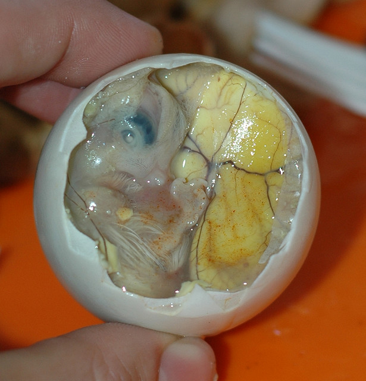
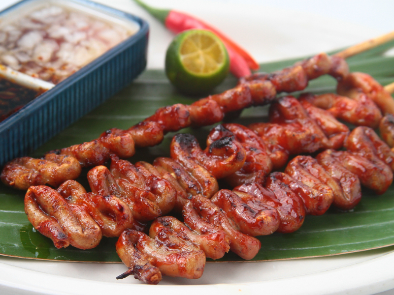

|
Lechon Buwaya |
Mindanao |
Lechon Buwaya, is a delicacy in certain parts of Davao. It is a roasted crcodile meat, cooked whole in a open fire. Its taste is very similar to chicken. |
|  |
Balut |
The Whole Philippines |
Balut is eaten in all parts of the Philippines. Its origins are from China, it was introduced to the Philippines via trading, and after that it was loved by the Filipinos. Its tastes is similar to chicken broth. Its bested tasted with suka and asin. |
|  |
Chicken Isaw |
Philippines |
Chicken Isaw, is a street food that can be found in all of the Philippines. Chicken Isaw is the intestine of the chicken being cooked in a grill. Its both chewy and smooth, and it is best paired with suka in onion |
 |
Halo Halo |
Philippines |
Halo Halo, is a dessert delicacy founded in the Philippines. Its origins are from pre war Japanese people living in the the Philippines. its ingredients are Ube, Yema, ice, gatas, and sides such as sweetened kidney beans, garbanzo beans, coconut strips, sago, gulaman, and many more. |
 |
Beef Nilaga |
Philippines |
Beef Nilaga, is a delicacy in the whole Philippines. It is a soup with tons of ingredients, including beef, corn, petchay, potatoes, and peppers. |